Waarom multiplex
Slim beginnen aan je trap
Goedkoper dan een betontrap
Een voordelige basis voor je trap, zonder betonwerk.
Ter plaatse gemaakt
Op maat van je trapgat, gemaakt bij jou op de werf.
Watervast
Treden en tegentreden in watervaste multiplex.
Eenvoudig te isoleren
De multiplex constructie laat zich makkelijk isoleren.
Al in de ruwbouwfase
We plaatsen hem zodra de ruwbouw regendicht is.
Meteen een werftrap
Tijdens de werken heb je al een vaste trap naar boven.
Ook in houtskeletbouw
De multiplex ondertrap past perfect in houtskeletbouw.
Ook als keldertrap
Hij hoeft niet bekleed te worden: een voordelige keldertrap.
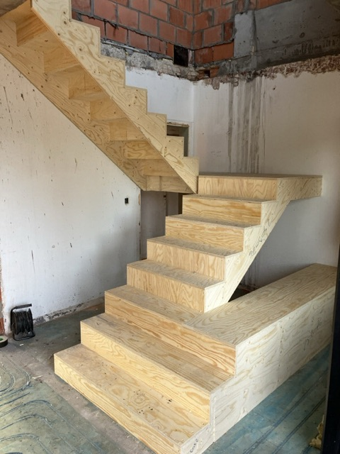
Nu een werftrap, later je eindtrap
De basis voor elke trap
Een multiplex ondertrap is de ruwe basis van je trap. We maken hem ter plaatse, zodra de ruwbouw regendicht is. Tijdens de werken heb je zo meteen een vaste trap naar boven.
Is de afwerking aan de beurt, dan kan je de ondertrap laten bekleden in de houtsoort van je keuze. In de kelder mag hij gewoon blijven zoals hij is.
Meer over trappen bekledenKan bij deze trappen
Voor een Z-trap, klassieke trap of rechte treden
Realisaties
Onze multiplex ondertrappen
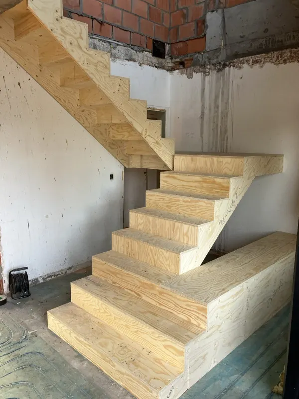
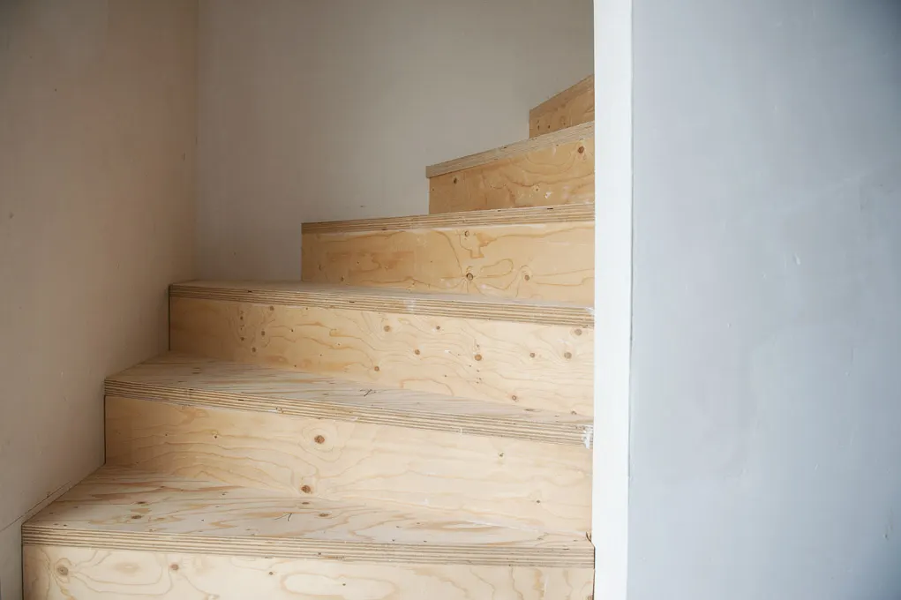
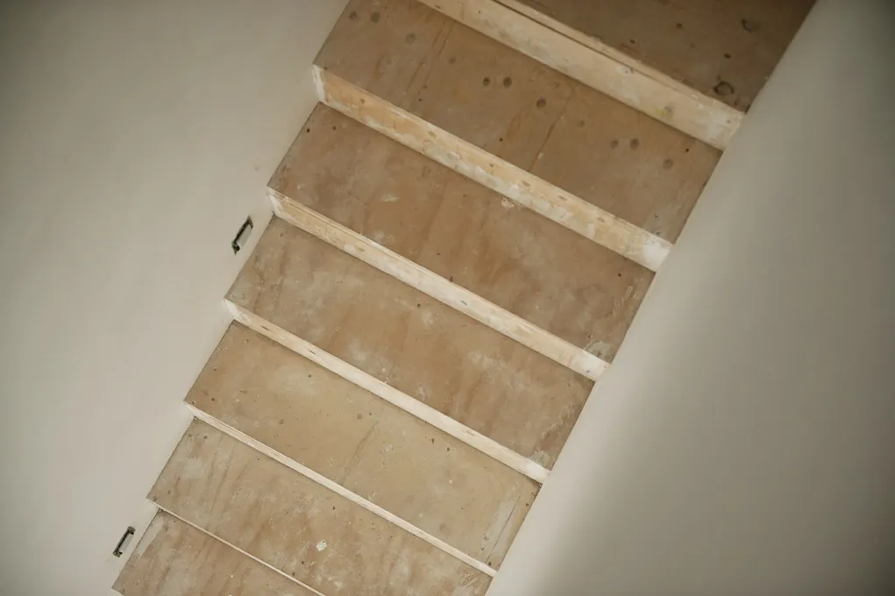
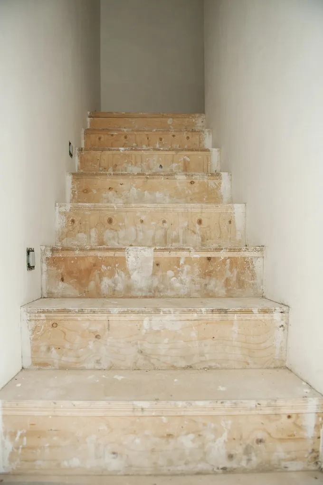
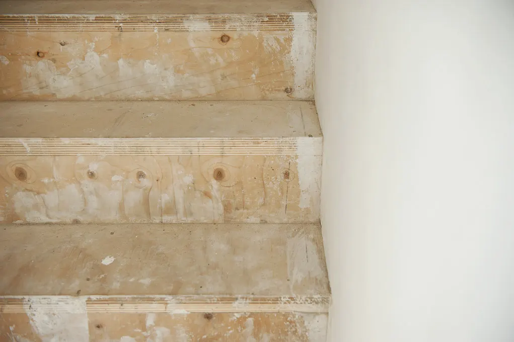
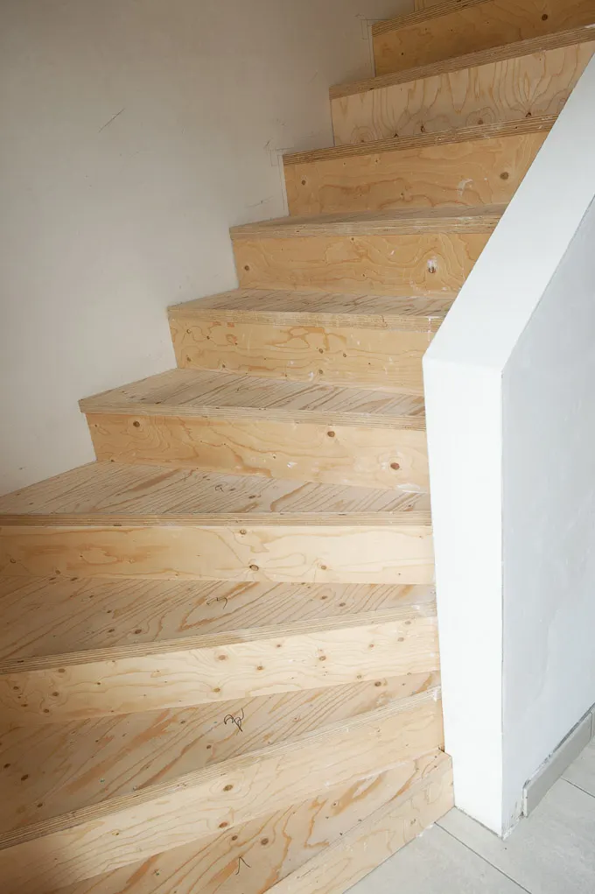
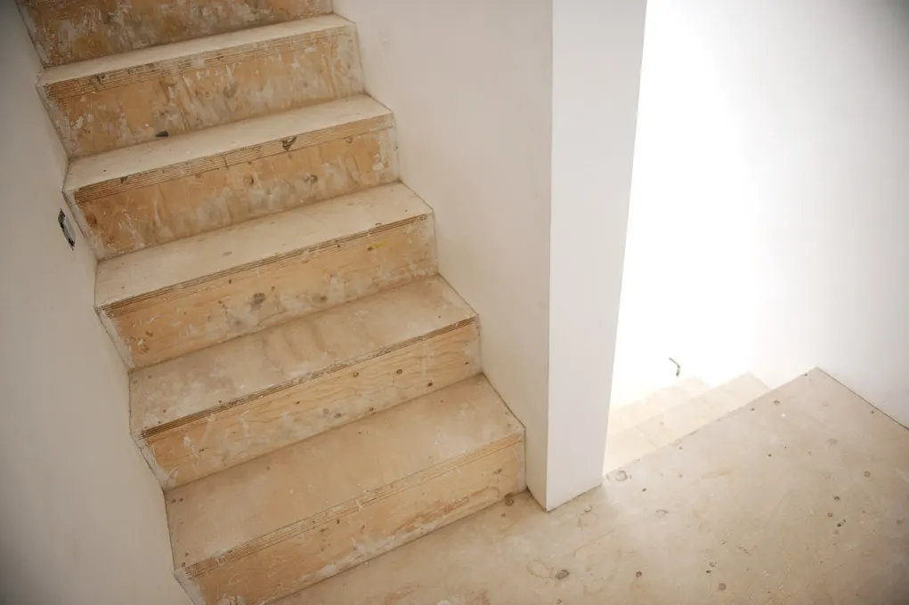
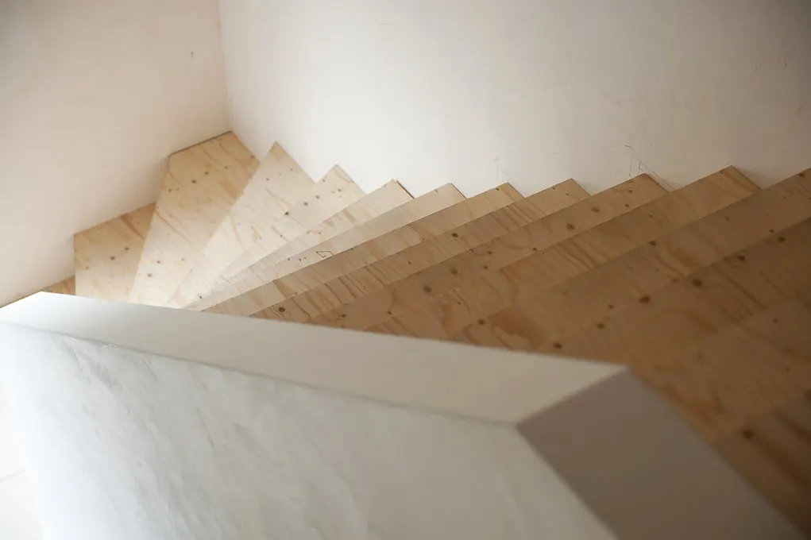
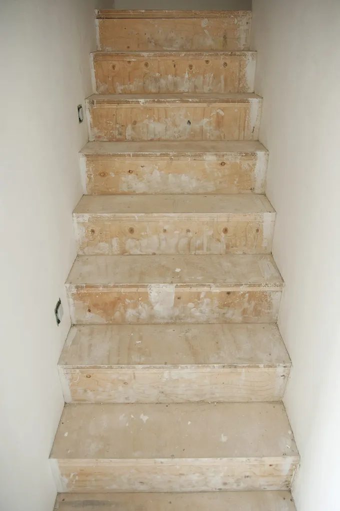
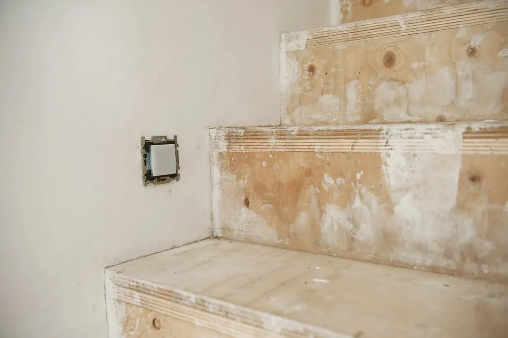
1 / 12
Zo verloopt het
In drie stappen
-
Gratis offerte
Vraag online je offerte aan, of kom langs in een van onze toonzalen.
-
Plaatsing in de ruwbouw
Zodra de ruwbouw regendicht is, maken we de ondertrap ter plaatse op maat.
-
Later bekleden
Gebruik hem als werftrap en laat hem bij de afwerking bekleden. Of laat hem zo, als keldertrap.
Veelgestelde vragen
Alles over de multiplex ondertrap
Wat is een multiplex ondertrap?
Een trap met treden en tegentreden in watervaste multiplex, die we ter plaatse op maat maken. Het is de ruwe basis van je trap: je gebruikt hem meteen, en kan hem later laten bekleden.
Wanneer kan de ondertrap geplaatst worden?
Zodra de ruwbouw regendicht is. Zo heb je tijdens de verdere werken al een vaste werftrap.
Kan ik de ondertrap later bekleden?
Ja. De multiplex ondertrap is de basis waarop je trap later bekleed kan worden, in de houtsoort en afwerking van je keuze.
Kan een multiplex ondertrap in houtskeletbouw?
Ja, de multiplex ondertrap kan perfect geplaatst worden in houtskeletbouw.
Kan ik hem gebruiken als keldertrap?
Ja. Omdat de multiplex ondertrap niet bekleed hoeft te worden, is hij een voordelige keldertrap.
Bij welke trappen kan een multiplex ondertrap?
Bij een Z-trap, een klassieke trap en een trap met rechte treden.
Wat kost een multiplex ondertrap?
Dat hangt af van de vorm en de maten van je trap. Vraag een gratis offerte aan, dan krijg je een prijs op maat.
Klaar om te starten met je trap?
Vraag een gratis offerte aan of maak een afspraak in onze toonzaal in Heusden-Zolder of Wetteren.